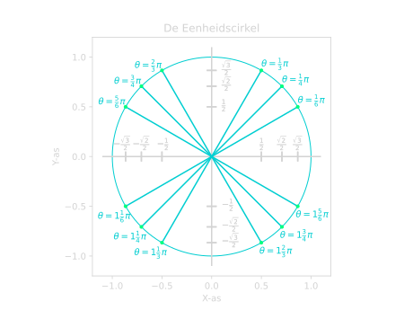

Goniometrie
Goniometrie gaat vooral over driehoeken en wat we daar allemaal mee kunnen berekenen. We kunnen de goniometrische functies gebruiken om hiermee te helpen. We gebruiken ze als we een hoek en een zijde hebben van een rechthoekige driehoek. We kunnen dan de andere twee zijdes berekenen met de goede goniometrische functie. Dit is erg handig, want met Pythagoras kunnen we dit niet doen.
Er zijn drie soorten goniometrische functies die we vaak gebruiken. De sinus, de cosinus en de tangens. Welke functie we gebruiken is afhankelijk van wat we hebben en wat we willen berekenen. Hieronder zie je het verband tussen de functies en de zijdes van een rechthoekige driehoek.
Belangrijk
De Goniometrische Functies
Dit kan je onthouden met het ezelsbruggetje: "SOS CAS TOA". Dit kun je als volgt begrijpen:
- SOS: Sinus is Overstaand gedeelt door Schuin.
- CAS: Cosinus is Aanliggend gedeelt door Schuin.
- TOA: Tangens is Overstaand gedeelt door Aanliggend.
Overstaand, Aanliggend en Schuin
Overstaand, Aanliggend en Schuin gaan over de verschillende zijdes van een rechthoekige driehoek. Dit is altijd bepaald ten opzichte van de hoek waar je naar kijkt. Dus in Figuur 1 kijken we ten opzichte van de hoek \(\theta\).
Vanuit deze hoek \(\theta\) bepalen we welke de overstaande zijde is en welke de aanliggende. De schuine zijde is altijd hetzelfde voor een rechthoekige driehoek. Dus dan maakt het niet uit vanaf welke hoek je kijkt.
Figuur 1. Een rechthoekige driehoek met de overstaande, aanliggende en schuine zijdes aangegeven.
De kenmerken van de verschillende soorten zijdes:
- Schuine zijde: De zijde tegenover de hoek van \(90 ^{\circ}\). Het is ook de langste zijde van de rechthoekige driehoek.
- Aanliggende zijde: De andere zijde die samen met de schuine zijde de hoek \(\theta\) maakt.
- Overstaande zijde: De zijde tegenover de hoek \(\theta\).
Zijdes Bepalen
Laten we naar een voorbeeld kijken. In Figuur 2 hieronder hebben we een rechthoekige driehoek gegeven gekregen.

Figuur 2. Een rechthoekige driehoek met de hoek \(\theta\) en de punten \(A\), \(B\) en \(C\).
Stel we willen zijde \(BC\) bepalen en we weten dat \(\theta = 60 ^{\circ}\) en \(AB = 2\). Hoe pakken we dit dan aan?
Zoals we eerder zagen, kunnen we dit probleem niet oplossen met Pythagoras. Hiervoor hebben we de goniometrische funties nodig. Maar welke moeten we gebruiken, de sinus, cosinus of de tangens?
We hebben de hoek \(\theta\) en de zijde \(AB\). Dit is de overstaande zijde, want het is de zijde tegenover hoek \(\theta\). Verder willen we zijde \(BC\) weten. Dit is de aanliggende zijde, want het maakt samen met de schuine zijde de hoek \(\theta\).
We zoeken dus een functie die iets met een overstaande en aanliggende zijde heeft. We kunnen bij de goniometrische functies zien dat we dus de tangens moeten gebruiken. Deze functie heeft namelijk beide zijdes die we willen. Laten we als eerst de tangens opschrijven:
De overstaande zijde is dus \(BC\) en de aanliggende is \(AB\):
Nu kunnen we dit omschrijven om \(BC\) vrij te maken:
Laten we nu de gegevens invullen die we hebben:
Als we dit in een rekenmachine stoppen, dan vinden we:
We kunnen in Figuur 2 controleren dat dit antwoord best zou kunnen kloppen.
Hoeken Bepalen
We kunnen de goniometrische functies ook gebruiken om een hoek te bepalen. We hebben daarvoor \(2\) zijdes van de rechthoekige driehoek nodig.
We gebruiken dan de inverse van de goniometrische functie. Dit noteren we dan met een arc of met een \(^{-1}\).
Belangrijk
Notatie van de inverse goniometrische functies
Op een rekenmachine worden de inverse functies aangegeven met een \(^{-1}\). Dus:
- \(\large{\sin^{-1}(x)}\)
- \(\large{\cos^{-1}(x)}\)
- \(\large{\tan^{-1}(x).}\)
Maar we raden het af om het zo op te schrijven, omdat dit verwarring kan opleveren. Want
De inverse betekent hier dus niet dat we \(1\) gedeelt door de functie moeten doen. Maar bij \(x^{-1}\) is dit juist wel het geval. Dit kan verwarrend zijn, dus om dit te vermijden schrijven wij de inverse van \(\sin(x)\) als \(\arcsin(x)\) op.
Laten we naar een voorbeeld kijken om te zien hoe dit werkt. In Figuur 3 hebben we een rechthoekige driehoek met zijdes \(BC = 2\) en \(AB = 2\).

Figuur 3. Een rechthoekige driehoek met zijdes \(BC = 2\) en \(AB = 2\).
We willen nu de hoek \(\theta\) bepalen. Om dit te doen, kijken we als eerst naar welke zijdes we hebben.
We hebben de zijde \(BC\) als overstaande zijde. Dit kunnen we herkennen aan het feit dat de zijde niet is verbonden met de hoek \(\theta\). We hebben ook zijde \(AB\) als aanliggende zijde. Dit weten we omdat het samen met de schuine zijde de hoek \(\theta\) maakt. En \(AB\) is niet de schuine zijde, want de schuine zijde is de zijde tegenover de \(90 ^{\circ}\) hoek.
We hebben dus de overstaande en de aanliggende zijde. Dit betekent dus dat we de tangens moeten gebruiken:
Als we nu \(BC = 2\) en \(AB = 2\) invullen:
Dus we weten dat de tangens van \(\theta\) gelijk is aan \(1\). We kunnen nu \(\theta\) bepalen door de \(\arctan\) te nemen:
Als we dit in onze rekenmachine stoppen (dus \(\tan^{-1}(1)\)), dan vinden we:
En als we kijken in Figuur 3, dan kunnen we controleren dat dit een logisch antwoord is. Het ziet er namelijk ook uit als de helft van een rechte (\(90 ^{\circ}\)) hoek.
Voorbeelden
Voorbeeld 1: Bereken zijde \(BC\)
Bereken zijde \(BC\) in de onderstaande rechthoekige driehoek.
Figuur 4. Een rechthoekige driehoek met een hoek \(\theta = 30 ^{\circ}\) en een zijde \(AC = 4\).
Uitwerking
We hebben dus de hoek \(\theta=30 ^{\circ}\) en een zijde \(AC = 4\). Zijde \(AC\) is de schuine zijde, want het is de zijde tegenover de hoek van \(90 ^{\circ}\). We willen zijde \(BC\) bepalen en dat is de overstaande zijde. \(BC\) is namelijk de zijde tegenover \(\theta\).
Dus onze functie moet iets met een schuine zijde hebben en iets met een overstaande zijde. Als we bij de goniometrische functies kijken, dan zien we dat we de sinus moeten gebruiken. Laten we deze opschrijven:
We weten dus dat \(AC\) de schuine zijde is en \(BC\) de overstaande:
We willen \(BC\) bepalen, dus laten we die vrij maken. We moeten dus de formule gaan omschrijven:
Als we nu \(AC = 4\) en \(\theta = 30 ^{\circ}\) invullen:
Als we dit in een rekenmachine stoppen, dan vinden we:
En als we dit controleren in Figuur 4, dan kunnen we zien dat dit een logisch antwoord is.
Voorbeeld 2: Bepaal de hoek \(\theta\)
Bepaal de hoek \(\theta\) in de onderstaande rechthoekige driehoek.
Figuur 5. Een rechthoekige driehoek met zijdes \(AC = 4\) en \(AB = 3\).
Uitwerking
We moeten de hoek \(\theta\) bepalen, dus laten we eerst kijken naar welke zijdes we hebben. Zijde \(AC\) is de schuine zijde, want het is de zijde tegenover de rechte hoek. Dat betekent dat \(AB\) de aanliggende zijde is, want samen met de schuine zijde \(AC\) maken ze \(\theta\).
Dus we hebben de schuine en aanliggende zijde. Dit betekent dat we de cosinus moeten gebruiken:
We vullen dus \(AB\) in als aanliggende zijde en \(AC\) als schuine zijde:
We weten dat \(AB = 3\) en \(AC = 4\):
Om de hoek te bepalen, nemen we de \(\arccos\):
Als we dit invullen op onze rekenmachine (dus \(\cos^{-1}(\frac{3}{4})\)), dan vinden we:
Graden ronden we af op \(1\) decimaal, dus ons eindantwoord wordt dan:
Voor VMBO is dit op gehele getallen:
Voorbeeld 3: Bepaal de hoek \(\theta\) en zijde \(AB\)
Bepaal de hoek \(\theta\) in de onderstaande rechthoekige driehoek.
Figuur 6. Een rechthoekige driehoek met zijdes \(AC = 8\) en \(BC = 6\).
Uitwerking
We willen de hoek \(\theta\) en de zijde \(AB\) bepalen, dus laten we als eerst beginnen met \(\theta\).
We hebben de zijdes \(BC\) en de zijdes \(AC\) gegeven. Zijde \(BC\) is de overstaande zijde, want het is de zijde tegenover de hoek \(\theta\).
Om te bepalen welke zijde \(AC\) is, moeten we goed opletten. De zijde tegenover de rechte hoek is de schuine zijde. In dit geval is dat zijde \(AB\). Dit betekent dus dat zijde \(AC\) de aanliggende zijde is, want samen met de schuine zijde maken ze \(\theta\).
We hebben dus de overstaande en de aanliggende zijde, dus moeten we de tangens gebruiken:
We weten dus dat de overstaande zijde \(BC\) is en de aanliggende \(AC\):
Nu kunnen we \(BC = 6\) en \(AC = 8\) invullen:
Om \(\theta\) te bepalen, kunnen we de \(\arctan\) nemen:
Als we dit invullen in onze rekenmachine (dus \(\tan^{-1}(\frac{3}{4})\)), dan vinden we:
Graden ronden we af op \(1\) decimaal, dus ons eindantwoord wordt:
Voor VMBO is dit op gehele getallen:
Nu willen we zijde \(AB\) bepalen. We kunnen dit op meerdere manieren doen. We kunnen dit berekenen met de sinus, cosinus of met Pythagoras. Wij kiezen er hier voor om het met de sinus te berekenen. Maar voel je vrij om de andere methodes te proberen om te kijken of je het beheerst!
Voor de sinus hebben we iets met de overstaande en de schuine zijde:
We hebben net gezien dat de overstaande zijde \(BC\) is en \(AB\) de schuine zijde:
We moeten nu deze formule omschrijven om AB vrij te maken:
Nu vullen we \(\theta = 36.869...\) en \(BC = 6\):
Zorg er dus voor dat je \(\theta\) niet tussendoor afrond, want dan krijg je ook een (iets) ander antwoord. Als we dit invullen op onze rekenmachine, dan vinden we:
De Sinus en Cosinus functies
Laten we nu iets dieper ingaan op de sinus en cosinus functies. Wat deze functies bijzonder maakt, is dat het periodieke functies zijn. Dit betekent dat de functie zich herhaalt na een bepaalde tijd. In dit geval is dat elke \(2 \pi\). Dus elke \(2 \pi\) begint de functie weer opnieuw en herhaalt het zich weer. We zeggen dan dat deze functie een periode heeft van \(2 \pi\) (zie ook Figuur 7 en Figuur 8).
Graden vs Radialen
In de meetkunde gebruiken we vaak graden. Maar als we meer gaan kijken naar de goniometrische functies zelf en hun vorm, dan zijn radialen vaak handiger.
Radialen is een eenheid voor hoeken, net zoals graden. Radialen gaan niet van \(0\) tot \(360 ^{\circ}\), maar van \(0\) tot \(2 \pi\). We kiezen voor \(2 \pi\) als eindpunt omdat dit de omtrek is van een cirkel met straal \(1\). Dus als we \(1\) rondje doen, hebben we \(2 \pi\) afgelegd, \(2\) rondjes hebben we \(4 \pi\) afgelegd, \(3\) rondjes \(6 \pi\) enzovoort. Een half rondje is dan \(\pi\) of \(180 ^{\circ}\).
We kunnen van radialen naar graden omrekenen en andersom:
Om van graden naar radialen te gaan doen we:
- Graden naar Radialen: \(\large{\quad \theta_{grad} \cdot \Large \frac{2 \pi}{360 ^{\circ}} \large = \theta_{rad}}\)
- Radialen naar Graden: \(\large{\quad \theta_{rad} \cdot \Large \frac{360 ^{\circ}}{2 \pi} \large = \theta_{grad}}\)


Belangrijk
Het feit dat de functie zich herhaald kunnen we ook terug zien in de functie zelf.
Dus dit betekent bijvoorbeeld dat:
- \(\large \sin(\pi) = \sin(3 \pi)\)
- \(\large \cos(1 \frac{1}{2}) = \cos(- \frac{1}{2} \pi)\)
- \(\large \cos(4 \pi) = \cos(6 \pi)\)
- \(\large \sin(- \frac{1}{4} \pi) = \sin(1 \frac{3}{4} \pi)\)
- etc.
Het feit dat deze functies periodiek zijn, is erg belangrijk als we er vergelijkingen mee gaan oplossen. Laten we naar de volgende vraag kijken:
Bereken x: \(\cos{(x)} = 1\)
We kunnen in Figuur 3 (of op de eenheidscirkel) aflezen dat dit geldt voor \(x = 0\). Maar omdat de functie zich herhaalt, geldt dit ook voor \(x = 2 \pi, \ x = 4 \pi, \ x = 6 \pi\), etc.. Om met al deze oplossingen rekening te houden, schrijven we:
want \(\cos{(0)} = 1\). Om dus met alle oplossing reking te houden, schrijven dit dus als:
waarbij er geldt dat:
Laten we naar nog een vraag kijken:
Bereken x: \(\sin{(x)} = 0\)
We zien nu in Figuur 2 dat dit geldt voor \(x = 0, \ x = \pi, \ x = 2 \pi, \ x = 3 \pi\), etc.. We beginnen weer met het schrijven van het getal als een sinus. Dit wordt dan:
En we hebben dus net gezien dat we er geldt dat:
Bij de vorige twee voorbeelden hebben we gewoon afgelezen hoe vaak het geldt, maar kunnen we ook een algemene oplossing verzinnen die altijd geldt? Het antwoord is ja!
Belangrijk
Uitwerken sin/cos vergelijkingen
Met een sinus:
geeft:
en met een cosinus:
geeft:
waarbij er geldt dat:
In de \(\cos\) en \(\sin\) functies zit een bepaalde symmetrie. De sinus functie heeft een symmetrie punt op de oorsprong, terwijl de cosinus functie een symmetrie as heeft bij de \(y\)-as. Deze symmetrie is op de volgende manier weer te geven in formule form:
Belangrijk
Symmetrieformules
-
\[\large{\sin{(-x)} = - \sin{(x)}}\]
-
\[\large{\cos{(x)} = \cos{(-x)}}\]
-
\[\large{\cos{(\pi - x)} = \cos{(-x)}}\]
-
\[\large{\sin{(\pi - x)} = \sin{(x)}}\]
De cosinus functie is eigenlijk hetzelfde als de sinus functie, alleen is het \(\frac{1}{2} \pi\) opgeschoven naar rechts. In formule form wordt dit dan:
Belangrijk
Sinus en Cosinus omschrijven
-
\[\large{\sin{(x)} = \cos{(x - \frac{1}{2} \pi)}}\]
-
\[\large{\cos{(x)} = \sin{(x + \frac{1}{2} \pi)}}\]
Als je niet wilt onthouden bij welke functie je \(+ \frac{1}{2} \pi\) doet, en bij welke je \(- \frac{1}{2} \pi\), kan je het ook op de volgende manier omschrijven:
Alternatieve manier
-
\[\large{\sin{(x)} = \cos{(\frac{1}{2} \pi - x)}}\]
-
\[\large{\cos{(x)} = \sin{(\frac{1}{2} \pi - x)}}\]
En dit verband werkt ook altijd.
Bewijs
Dit kunnen we zelf bewijzen met behulp van de Symmetrieformules.
Laten we eerst kijken om van \(\sin\) naar \(\cos\) te gaan. Als we regel 2 gebruiken zien we het eigenlijk al meteen:
Nu kijken we om van \(\cos\) naar \(\sin\) te gaan. Hiervoor gebruiken we regel 4:
Voorbeelden
Voorbeeld 1: \(\cos{(2x)} = 0\)
Bereken x: \(\cos{(2x)} = 0\) Uitwerking
We lossen dit op door eerst van de \(0\) een \(\cos\) te maken. In dit geval kunnen we in Figuur 3 of met de Eenheidscirkel zien dat dit geldt bij \(\cos{(\frac{1}{2} \pi)}\).
We kunnen dus zeggen dat:
En dus kunnen we zeggen dat (zie uitwerken sin/cos):
En nu delen we alles door \(2\) om te vinden dat:
Voorbeeld 2: \(\sin{(3x)} = \cos{(-x)}\)
Bereken x: \(\sin{(3x)} = \cos{(-x)}\) Uitwerking
Als eerst beginnen we met het realiseren dat we dit ook kunnen schrijven als:
zie de Symmetrieformules. Nu moeten we de \(\cos\) omschrijven naar een \(\sin\) (of andersom). Dit doen we met deze regel:
Nu kunnen we dit uitwerken (zie uitwerken sin/cos):
Nu doen we alle termen met \(x\) naar de linkerkant:
Nu delen we alles door \(2\) en \(4\) respectievelijk om te vinden:
Voorbeeld 3: \(\cos{(3x + \pi)} = \cos{(x + \frac{1}{2} \pi)}\) op het interval \([0, \ 2 \pi]\)
Bereken x: \(\cos{(3x + \pi)} = \cos{(x + \frac{1}{2} \pi)}\) op het interval \([0, \ 2 \pi]\) Uitwerking
We hebben hier aan beide kanten al iets met \(\cos\) staan, dus we kunnen dit meteen gaan uitwerken:
Nu alle termen met \(x\) naar de linkerkant en alle getallen rechts:
En nu alles gedeelt door \(2\) en \(4\) respectievelijk:
Maar let op! Nu wordt er gevraagd naar alle oplossingen op het interval \([0, \ 2 \pi]\). Dit betekent dat we alle verschillende waardes voor \(k\) moeten invullen totdat we alle verschillende waardes tussen \(0\) en \(2 \pi\) gehad hebben.
| Linker vergelijking | Rechter vergelijking | |
|---|---|---|
| \(\large{k = 0}\) | \(\large{x = - \frac{1}{4} \pi}\) | \(\large{x = - \frac{3}{8} \pi}\) |
| \(\large{k = 1}\) | \(\large{x = \frac{3}{4} \pi}\) | \(\large{x = \frac{1}{8} \pi}\) |
| \(\large{k = 2}\) | \(\large{x = 1 \frac{3}{4} \pi}\) | \(\large{x = \frac{5}{8} \pi}\) |
| \(\large{k = 3}\) | \(\large{x = 2 \frac{3}{4} \pi}\) | \(\large{x = 1 \frac{1}{8} \pi}\) |
| \(\large{k = 4}\) | \(\large{x = 3 \frac{3}{4} \pi}\) | \(\large{x = 1 \frac{5}{8} \pi}\) |
| \(\large{k = 5}\) | \(\large{x = 4 \frac{3}{4} \pi}\) | \(\large{x = 2 \frac{1}{8} \pi}\) |
Uit deze waardes noteren we alle waardes voor \(x\) die op het interval liggen. Dat zijn de waardes bij \(k = 1\) en \(k = 2\) bij de linker vergelijking en de waardes bij \(k = 1,2,3,4\) bij de rechter vergelijking. Ons eindantwoord wordt dan:
\(\Large{x = \frac{1}{8} \pi \ \vee \ x = \frac{5}{8} \pi \ \vee \ x = \frac{3}{4} \pi \ \vee \ x = 1 \frac{1}{8} \pi \ \vee \ x = 1 \frac{5}{8} \pi \ \vee \ x = 1 \frac{3}{4} \pi}\)
De Eenheidscirkel
De eenheidscirkel is een manier om de verschillende waardes van \(\sin\) en \(\cos\) te bepalen bij verschillende hoeken. De eenheidscirkel is een cirkel met een straal van \(1\), vandaar dat het de eenheidscirkel wordt genoemt. In het onderstaande filmpje wordt de eenheidscirkel geschetst en wordt er kort een trucje vertelt hoe je de waardes kan achterhalen van \(\sin\) en \(\cos\) bij verschillende hoeken door alleen maar \(3\) hoeken en \(3\) bijbehorende waardes te onthouden.
Video
Filmpje: Een schets van de eenheidscirkel met de verschillende cosinus en sinus waardes bij verschillende hoeken. De x-cordinaten zijn de cosinus waardes en de y-cordinaten zijn de sinus waardes.
Laten we eerst kijken hoe we de eenheidscirkel kunnen gebruiken.

Stel dus dat we bijvoorbeeld er achter willen komen wat \(\sin{(\frac{1}{3} \pi)}\) is. Als we de eenheidscirkel bij de hand hebben, kunnen we daar kijken en dan zien we dat bij een hoek van \(\frac{1}{3} \pi\), het cordinaat \(\left(\frac{1}{2}, \frac{1}{2} \sqrt{3} \right)\) hoort. We willen de sinus weten en dus moeten we het \(y\)-cordinaat gebruiken. Onze eindconclusie wordt dan:
Opmerking: \(x\)-cordinaat hoort bij cosinus, \(y\)-cordinaat hoort bij sinus.
Hiervoor wordt er gezegd dat het \(x\)-cordinaat bij de cosinus hoort en dat het \(y\)-cordinaat bij de sinus hoort. Maar hoezo is dit het geval? Dat wordt hieronder laten zien.

In Figuur 6 is er een driehoek getekent bij de hoek \(\theta\). Hier is zijde \(b\) onze overstaande zijde en zijde \(a\) onze aanliggende zijde. Merk op dat lengte \(a\) het \(x\)-cordinaat is van ons punt dat op de eenheidscirkel ligt, en lengte \(b\) het \(y\)-cordinaat. We weten ook dat volgens onze Goniometrische Regels dat er geldt dat:
en dus in dit geval:
Maar doordat dit een eenheidscirkel is, betekent het dat de cirkel een straal van \(1\) heeft, en dus dat \(c = 1\). Onze \(\sin\) en \(\cos\) wordt dan:
En omdat we net zeiden dat lengte \(a\) ons \(x\)-cordinaat is en lengte \(b\) ons \(y\)-cordinaat, kunnen we zeggen dat:
Maar we hebben niet altijd de eenheidscirkel bij de hand en is het dus handig om de eenheidscirkel te onthouden. Om niet alles te hoeven onthouden, kan het volgende trucje handig zijn.
Trucje om de Eenheidscirkel te Onthouden
We onthouden de volgende waardes en hoeken en de volgorde van klein naar groot:
Belangrijk
Hoeken:
Waardes:
Nu kunnen we bepalen wat de waardes zijn door steeds bij elk kwart van de cirkel te kijken naar de voortgang van het begin punt van de kwart cirkel en het eindpunt. Dus hoe groter de hoek, hoe meer voortgang. Laten we weer kijken naar \(\sin{(\frac{1}{3} \pi)}\).
We hebben de hoek \(\theta = \frac{1}{3} \pi\) en dit is de grootste hoek uit de lijst van de \(3\) hoeken. Dit betekent dus er de meeste voortgang is gemaakt van het begin punt naar het eindpunt. In dit geval is het begin punt van de kwart cirkel \((1, 0)\) en het eindpunt \((0, 1)\). Omdat er de meeste voortgang is gemaakt, moeten de waardes het dichtst bij het eindpunt zitten. Dit betekent dus dat het \(x\)-cordinaat de kleinste waarde is tussen \(1\) en \(0\), en het \(y\)-cordinaat de grootste waarde tussen \(0\) en \(1\) is. We nemen de sinus en we zijn dus alleen gentereseerd in het \(y\)-cordinaat. De grootste waarde tussen \(0\) en \(1\) uit de lijst van de \(3\) waardes is \(\frac{1}{2} \sqrt{3}\) en dus kunnen we zeggen dat:
Opmerking
Als de hoek groter is dan \(\theta = \frac{1}{2} \pi\), en dus niet in het eerste kwadrant zit, moet je eerst de hoek van het begin punt aftrekken van de hoek die je wilt berekenen. Stel we hebben bijvoorbeeld de hoek \(\theta = \frac{5}{6} \pi\), dan doen we dat eerst min de hoek van het begin punt, en dat is in dit geval \(\frac{1}{2} \pi\), omdat dit in het tweede kwadrant zit (het kwart links boven van de cirkel). We krijgen dan \(\theta = \frac{1}{3} \pi\) en dan zien we dat het dus de meeste voortgang is tussen het begin punt en het eind punt.
Als dit nog niet helemaal duidelijk was, staan hieronder nog een paar andere voorbeelden.
Voorbeeld 1: \(\cos{(\frac{3}{4} \pi)}\)
Bereken cos(3/4 ) Uitwerking
We hebben hier een hoek van \(\theta = \frac{3}{4} \pi\). Dat zit tussen het beginpunt van \(\theta = \frac{1}{2} \pi\) en \(\theta = \pi\). Omdat we niet in het eerste kwadrant zitten, doen we eerst onze hoek min de start hoek, en dan vinden we \(\theta = \frac{1}{4}\). Dit betekent dat de voortgang precies in het midden zit, en dus ook dat de waarde precies in het midden is van onze waardes.
Ons begin punt is \((0, 1)\) en ons eindpunt is \((-1, 0)\). We zeiden net al dat onze progressie precies in het midden zit van de twee waardes en dus is ons \(x\)-cordinaat \(-\frac{1}{2} \sqrt{2}\) en ons \(y\)-cordinaat \(\frac{1}{2} \sqrt{2}\). We namen de cosinus en dus moeten we de x-waarde hebben. Ons antwoord wordt dan:
Voorbeeld 2: \(\sin{(1 \frac{1}{6} \pi)}\)
Bereken sin(1 1/6 ) Uitwerking
We hebben hier een hoek van \(\theta = 1 \frac{1}{6}\) dat tussen de starthoek \(\pi\) en de eindhoek \(1 \frac{1}{2} \pi\) ligt. We halen dus eerst de starthoek van onze hoek af om te vinden \(\theta = \frac{1}{6} \pi\). Er is dus de minste voortgang gemaakt tussen het start- en eindpunt uit de \(3\) waardes die wij kunnen kiezen.
Het startpunt is (-1, 0) en het eindpunt is (0, -1). We nemen de sinus, dus alleen het \(y\)-cordinaat is interessant. De minste voortgang hier betekent dus dat \(y = - \frac{1}{2}\) en dus:
Voorbeeld 3: \(\cos{(1 \frac{2}{3} \pi)}\)
Bereken cos(1 2/3 ) Uitwerking
We hebben hier een hoek van \(\theta = 1 \frac{2}{3}\) dat tussen de starthoek \(\theta = 1 \frac{1}{2} \pi\) en de eindhoek \(2 \pi\) zit. Als eerst doen we onze hoek min onze starthoek: \(\theta = \frac{1}{6} \pi\). Er is dus de minste voortgang gemaakt tussen ons startpunt en ons eindpunt.
Ons startpunt is \((0, -1)\) en ons eindpunt is \((1, 0)\). We nemen de cosinus en dus zijn we alleen gentereseerd in het \(x\)-cordinaat. De minste voortgang geeft hier \(x = \frac{1}{2}\) en dus:
Maar je bent natuurlijk niet verplicht om dit trucje te gebruiken. Als je het handiger vindt om gewoon de eenheidscirkel helemaal uit je hoofd te leren, doe dat vooral!
Goniometrische Vergelijkingen
Dit zijn goniometrische vergelijkingen die iets ingewikkelder zijn, maar vaak gebruikt worden.
Belangrijk
| Regels |
|---|
| \(\Large{\tan{(\theta)} = \frac{\sin{(\theta)}}{\cos{(\theta)}}}\) |
| \(\Large{\sin{(\theta)}^2 + \cos{(\theta)}^2 = 1}\) |
| \(\Large{\sin{(2 \theta)} = 2 \sin{(\theta)} \cos{(\theta)}}\) |
| \(\Large{\cos{(2 \theta)} = 2 \cos^2{(\theta)} - 1}\) |
| \(\Large{\cos{(2 \theta)} = \cos^2{(\theta)} - \sin^2{(\theta)}}\) |
| \(\Large{\cos{(2 \theta)} = 1 - 2 \sin^2{(\theta)}}\) |
| \(\Large{\sin{(\theta + \phi)} = \sin{(\theta)} \cos{(\phi)} + \cos{(\theta)} \sin{(\phi)}}\) |
| \(\Large{\sin{(\theta - \phi)} = \sin{(\theta)} \cos{(\phi)} - \cos{(\theta)} \sin{(\phi)}}\) |
| \(\Large{\cos{(\theta + \phi)} = \cos{(\theta)} \cos{(\phi)} - \sin{(\theta)} \sin{(\phi)}}\) |
| \(\Large{\cos{(\theta - \phi)} = \cos{(\theta)} \cos{(\phi)} + \sin{(\theta)} \sin{(\phi)}}\) |
De eerste twee vergelijkingen kunnen we bewijzen met behulp van de Goniometrische Regels die we eerder hebben gezien.
Bewijs
Bewijs eerste vergelijking
Laten we als eerst kijken naar
Door de Goniometrische Regels te gebruiken en de \(\sin\) en \(\cos\) in te vullen kunnen we dit herschrijven tot:
Dit kunnen we weer versimpelen door de \(\mathrm{Schuin}\) in de teller en noemer tegen elkaar weg te delen. We houden dan over:
En dit is precies de formule die we in al de Goniometrische Regels hebben staan, en dus klopt onze originele vergelijking voor \(\tan\).
Bewijs tweede vergelijking
Laten we nu naar de tweede vergelijking kijken:
Weer vullen we de definitie in van de \(\sin\) en \(\cos\) uit de Goniometrische Regels:
Omdat de noemers hetzelfde zijn kunnen we hier 1 breuk van maken:
Kunnen we dit nog verder versimpelen? Ja! We kunnen namelijk de met behulp van de Stelling van Pythagoras de teller herschrijven op deze manier:
En omdat iets gedeelt door zichzelf altijd gelijk is aan 1, betekent dat dus dat deze vergelijking klopt en dus ook dat onze originele vergelijking klopt.
Voorbeelden
Voorbeeld 1: \(\sin^2{(x)} = - \cos^2{(x)} + \tan{(x)}\)
Bereken x: \(\sin^2{(x)} = - \cos^2{(x)} + \tan{(x)}\) Uitwerking
We beginnen eerst met de \(\cos^2\) naar de linkerkant te doen:
We kunnen nu regel 2 toepassen van de Regels Goniometrische Vergelijkingen:
We kunnen nu gebruik maken van regel 1 van de Regels Goniometrische Vergelijkingen om dit te schrijven als:
Nu kunnen we beide kanten vermenigvuldigen met \(\cos\):
Nu kunnen we de \(\cos\) omschrijven naar een \(\sin\) (zie uitwerken sin/cos):
Dit kunnen we nu uitwerken:
Nu halen we alle termen met x aan de linkerkant:
Alle x termen zijn in de linker vergelijking weggevallen, dus daar hebben we niks meer aan. Met de rechter vergelijking kunnen we wel door. We delen aan beide kanten door \(2\), om als eindantwoord te vinden:
Voorbeeld 2: \(\frac{1}{2} \sin{(x)} \cos{(x)} = \frac{1}{4}\)
Bereken x: \(\frac{1}{2} \sin{(x)} \cos{(x)} = \frac{1}{4}\) Uitwerking
We zien hier een \(\sin{(x)} \cos{(x)}\) term, dus is het handig om dit te herschrijven met behulp van regel 3 van de Goniometrische Vergelijkingen. Om dit te doen, doen we beide kanten keer \(4\) om de \(2 \sin{(x)} \cos{(x)}\) te krijgen die we nodig hebben:
Nu passen we dus regel 3 van de Goniometrische Vergelijkingen toe:
Nu willen we aan beide kanten een \(\sin\) hebben. We maken dus van de \(1\) een \(\sin\). Met behulp van de eenheidscirkel kunnen we zien dat \(\sin{(\frac{1}{2} \pi) = 1}\) en dus dat:
Als we dit nu uitwerken vinden we:
In dit geval geldt er dat \(\pi - \frac{1}{2} \pi = \frac{1}{2} \pi\) en dus zijn beide oplossingen dezelfde oplossing. We houden dus alleen over:
Nu delen we beide kanten door \(2\) om te vinden dat: